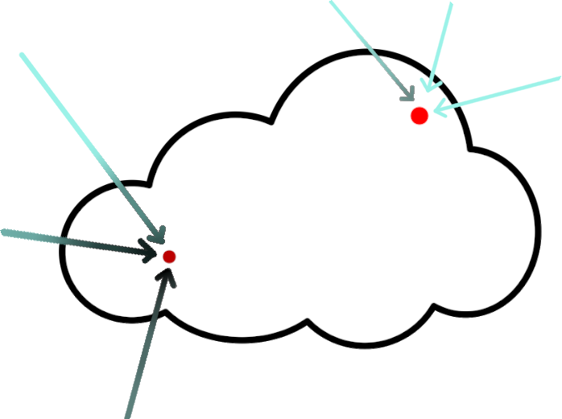
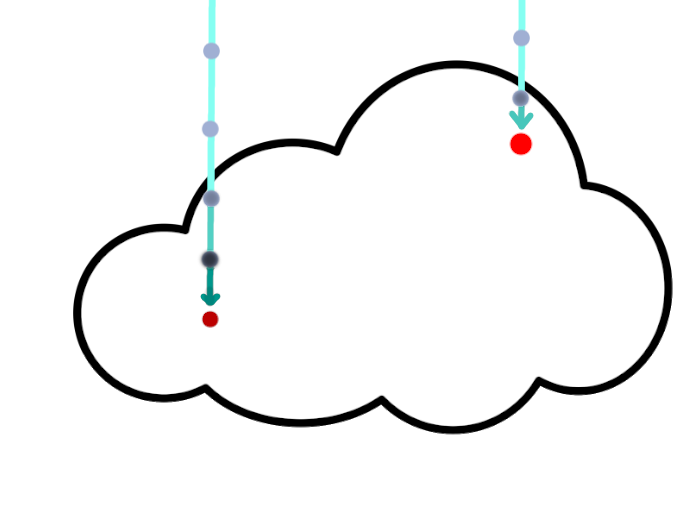
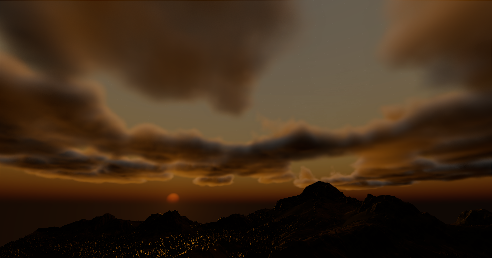
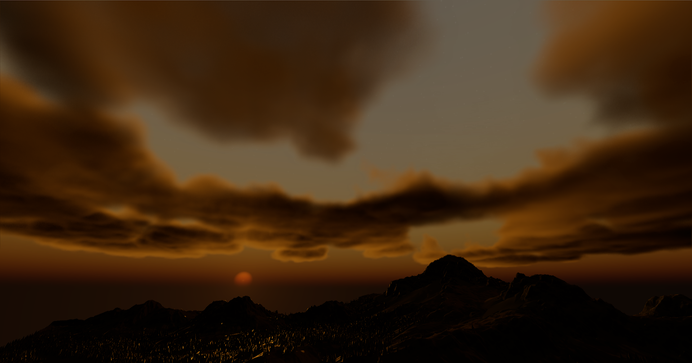
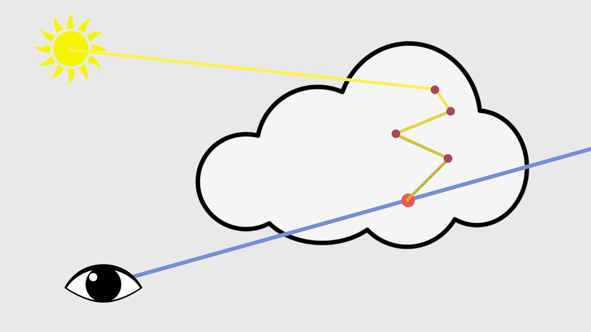
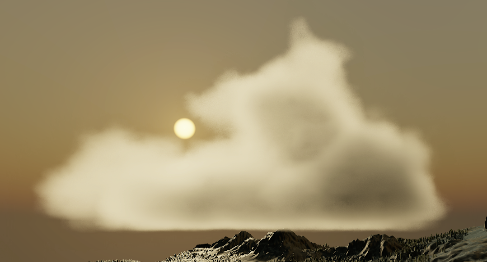
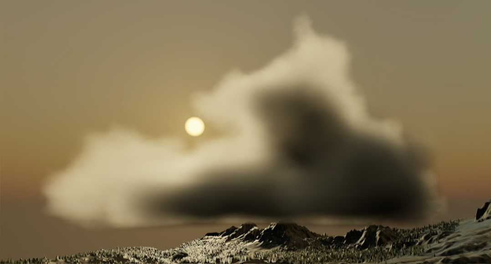

Lighting approximations
The lighting in real clouds is not as simple as a straight line towards the sun/light source.
In fact, there are more incoming sources and light bounces around the inside of the cloud.
Simulating this would be very expensive, but there are some good approximations that give us a
more realistic look.
Phase
An important factor in lighting volumes is that they do not scatter light evenly in all
directions;
in fact, they scatter light significantly more forward.
This causes clouds between you and the sun to be way brighter than when looking at clouds
opposite to the sun.
This factor can be calculated by the Henyey-Greenstein function.
It takes an eccentricity factor; lower values mean the light is more biased towards the incoming
light
direction.
// Phase function
float HenyeyGreensteinPhase(float inCosAngle /*the dot product difference between look and light direction*/, float inG /*The eccentricity*/)
{
float num = 1.0 - inG * inG;
float denom = 1.0 + inG * inG - 2.0 * inG * inCosAngle;
float rsqrt_denom = rsqrt(denom);
return num * rsqrt_denom * rsqrt_denom * rsqrt_denom * (1.0 / (4.0 * PI));
}
This can be directly applied to the lighting.
light += CalculateLighting()
* HenyeyGreensteinPhase(dot(rayDir, LIGHT_DIRECTION), g /*0.2*/) <changed>
* transmissance
* density
* stepSize;
Ambient lighting
An important factor in lighting clouds is ambient light that comes from the sky.
This causes clouds to be more lit with the color of the sky when not directly illuminated by the
sun, and adds more realistic shadowing since covered parts get less sunlight.
Ambient light coming from all directions, deeper and lower parts are more
shadowed

It would be way too expensive or noisy to calculate this by shooting actual rays in "random"
directions.
So instead, we use an approximation.
We can assume that most of the ambient light will come from the sky above since that is the
brightest part of the sky.
Keeping this in mind, we can combine the entire sky into one upwards ray.
What we do is first combine the sky into one light value/color by integrating the sky
hemisphere once.
I won't go over how to do this, but it can be done by either random sampling or spherical
harmonics.
Alternatively, you can just pick a color that resembles your sky.
To approximate shadowing of the rays, we shoot a ray upwards.
Since this light is not directional, it is not affected by either phase or sun direction.
That means this upwards ray can be precalculated for a static grid, and since this data is
already blurry by itself, it can be stored in a lower resolution grid.
Single ray approximation

To combine this all together, we weight the ambient lighting by not only this ray but also by
how far
into the cloud the sample is.
This is because the edges of the cloud receive more ambient light from around than the center of
the
cloud does. We can reuse the profile for this.
for(int i = 0; i < NUM_SAMPLES; i++) { // sample loop
...
// Ambient approximation
sampleLight +=
saturate(pow(profile, 0.5) // here we use a slightly modified profile to change the falloff of ambient light at edges,
// this could also be a remapped distance field to the edge of the cloud, we get into this later
* exp(-GetSummedAmbientDensity(samplePosition))) // Summed density of the upwards ray, this can be a precalculated texture sample or an actual march.
* (AMBIENT_LIGHT); // Light from the sky, could be a single color or a preintegrated sky light
...
totalLight += sampleLight * transmissance * sampleDensity * stepSize;
...
}
Comparison, you see mainly that the parts away from the sun are not
unrealistically dark anymore
and shadowed parts (the underside) stay shadowed


No Ambient
With Ambient
Multiple in-scattering
Clouds do not only receive sunlight directly from the source.
Light also scatters around the inside of the clouds and can hit our sample indirectly.

This would also be too expensive to calculate, but we can approximate the results.
The main effect that results from multiple scattering is that the inner parts of the clouds
become brighter.
This is because the inner parts have more cloud around them to scatter light from.
We also have to take into account the phase (so the angle to the sun) here since the scattering
is
still biased towards the light direction.
The approximation is not too accurate but gives a good-looking result and is very cheap.
This is not too bad since the effect of direct lighting is significantly stronger.
float InScatteringApprox(float _baseDimensionalProfile, float _sun_dot, float _accumulatedDensity)
{
// This accounts for the phase // how far inside the cloud, (should also use a distance field but this is fine for now)
return exp(-_accumulatedDensity * Remap(_sun_dot, 0.0, 0.9, 0.25, Remap(_baseDimensionalProfile, 1.0, 0.0, 0.05, 0.25)));
}
// In the march loop
...
// March towards the sun adding up density.
float inSunLightDensity = DirectLightMarch(); <changed>
// // not using uprezzed profile
float lightVolume = InScatteringApprox(1 - baseProfile, sunDot, inSunLightDensity); <changed>
sampleLight +=
lightVolume <changed>
* HenyeyGreensteinPhase(dot(rayDir, LIGHT_DIRECTION), g/)
* SUN_LIGHT;
...
totalLight += sampleLight * transmissance * sampleDensity * stepSize;
...
Comparison, you see that the inner parts of the cloud are significantly
brighter.
You can also see inner edges in the middle of the cloud be slightly darker adding detail.


No Scattering
With Scattering